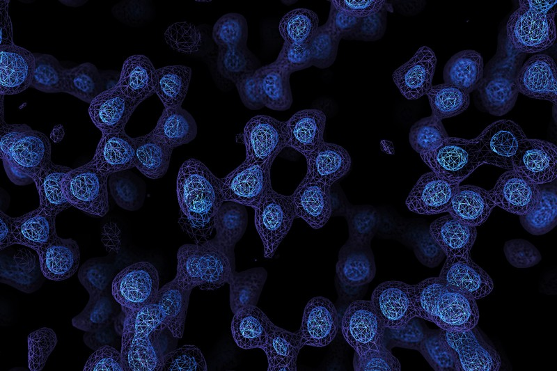
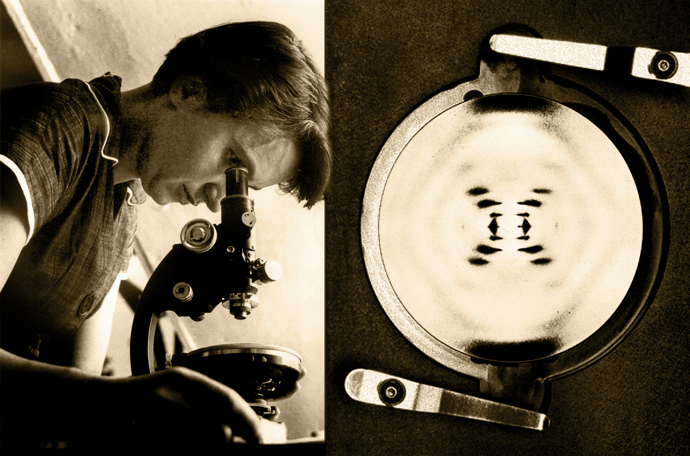
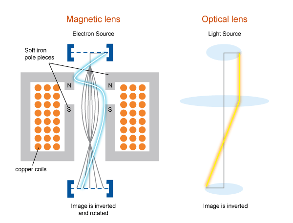

¡Ya tenemos las primeras fotos de átomos⚛ obtenidas con criomicroscopía electrónica🔬! Esto puede significar la siguiente gran revolución en la biología ¿Porqué?
|  |
|---|
| [Foto: Paul Emsley/MRC Laboratory of Molecular Biology] |
La biología estructural se dedica a estudiar la distribución de los átomos dentro de las moléculas que participan en los procesos biológicos, así como los cambios conformacionales que sufren cuando interaccionan con otras moléculas o con diferentes copias de ellas mismas. Esto es fundamental para entender cómo funcionan las células. El primer gran hito de la biología estructural sucedió en 1951 cuando Linus Pauling publicó un modelo teórico de la hélice alfa de las proteínas, soportado en mucha imaginación y algunos datos empíricos (él mismo narró que la estructura vino a su mente mientras hacía papiroflexia). La hélice alfa es uno de los motivos de estructura secundaria más común en las proteínas y en ella los aminoácidos de la cadena polipeptídica se acomodan en forma de una “espiral escalonada” soportada por los puentes de hidrógeno formados entre un grupo carbonilo y un grupo amino del esqueleto polipeptídico.

[Imagen hélice alfa 3Dciencia.com]
Inspirados en el trabajo de Pauling sobre hélices, Watson y Crick utilizaron el trabajo de Rosalind Franklin para proponer el modelo de la doble hélice del ADN. El descubrimiento de esta estructura 🧬 revolucionó la Biología 🌿 e hizo posible entender cómo se transmiten los genes de una célula a otra.
|  |
|---|
| [Rosalind Franklin bb y su fotografía del DNA. Este año celebramos 100 años del nacimiento de esta extraordinaria científica] |
Poco tiempo después (1959) vino otra gran revolución en la Biología: se obtuvo por primera vez la estructura terciaria de una proteína. Las proteínas realizan casi todos los procesos biológicos y conocerlas a detalle ha significado comprender a detalle la vida (al menos en el sentido de los mecanismos moleculares que la hacen posible).

[Modelo de Max Perutz de la hemoglobina]
Obtener las “fotos” de la hemoglobina no fue tan fácil. Estas fotos se las debemos a una técnica llamada difracción de rayos X. ¡Con ella hemos observado componentes del átomo! Pero esta técnica tiene un problema: se necesita obtener un cristal de la macromolécula para obtener un patrón de difracción que nos revele información de la estructura. ¿Y qué es un cristal? Un cristal es un arreglo molecular con un patrón que se replica en las tres dimensiones. Por ejemplo, en la sal común, los iones de cloro y de sodio están distribuidos de forma ordenada y regular como las losas en un mosaico tridimensional.
[© Thinkstock]
Un cristal de proteína debe conseguir el mismo ordenamiento pero con moléculas que son tres órdenes de magnitud más grandes que la sal, que tienen una forma mucho más irregular y cuyos enlaces poseen vibraciones y rotaciones que confieren a la molécula de mucha más movilidad. Encontrar las condiciones para obtenerlo puede tomar meses e incluso años.
[Foto: ScienceDirect]
[Protein Data Bank]
Pero en 1997 se resolvió por primera vez la estructura de una proteína por una técnica nueva: Criomicroscopía Electrónica (Cryo-EM). En esta técnica no hace falta tener un cristal de proteína. La muestra se congela con nitrógeno líquido y se bombardea con electrones. Después se registra el choque de cada electrón en un sensor al rebotar en la muestra. Así como los murciélagos usan ondas de sonido para conocer el mundo, los electrones permiten reconstruir una imagen 2D de una molécula. Tomar varias “fotos” de la molécula en diferentes posiciones permite construir una imagen 3D.
 [Foto: http://myscope.com]
Al conseguir observar átomos con Cryo-EM, se abren muchas posibilidades para estudiar moléculas dentro de la célula. Esta técnica nos ayudará a conocer con detalles el funcionamiento de las proteínas en un contexto celular: su interacción in situ con otras moléculas que le permiten llevar a cabo su función biológica, la organización supramolecular de la maquinaria celular y especialmente, los mecanismos que provocan estados patológicos, lo que llevará la medicina molecular diseñar.
Por ejemplo, la obtención por difracción de rayos X y por Cryo-EM de diferentes coformaciones de la estructura de la proteína que usa el SARS-CoV-2 para infectar las células, la Spike protein, está permitiendo la búsqueda racional de fármacos para combatir la enfermedad COVID-19. Ahora que se ha roto llegado a resolución atómica con Cryo-EM podremos obtener por ejemplo fotos atomísticas del virus completo infectando la célula.
[Foto: ©Science]
Referencias: